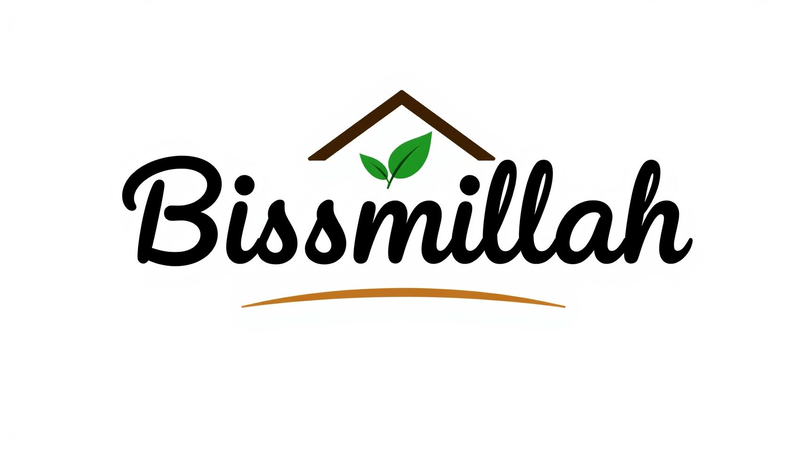

Dukung Proyek Kami 🙏
Silakan scan QRIS Saweria di bawah ini untuk memberikan donasi dukungan.

Kumpulan tools gratis bertenaga untuk kebutuhan konten kreator Reels, TikTok, dan YouTube.
Silakan scan QRIS Saweria di bawah ini untuk memberikan donasi dukungan.